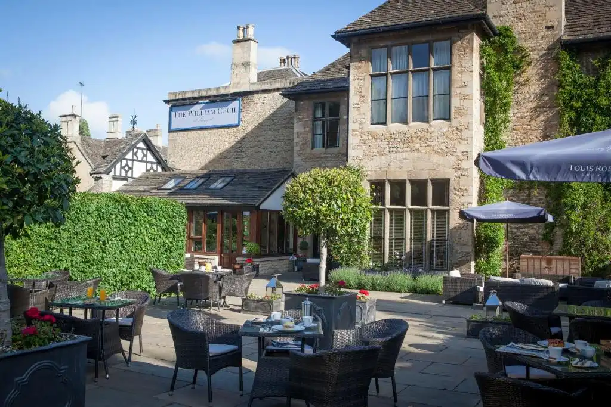

The William Cecil
The William Cecil is located on St Martins street in Stamford and offers a range of
venues and a hotel. So if you're looking for somewhere to stay on a trip
out or after a party, then the William Cecil is available for you.
The William Cecil is a four-star hotel that offers room service, a beautiful outdoor dining area, and an indoor dining area. It provides all its customers with a great experience they will not forget.
The William Cecil is a four-star hotel that offers room service, a beautiful outdoor dining area, and an indoor dining area. It provides all its customers with a great experience they will not forget.
The George Hotel
The George is a grand hotel located on St Martins street with prime access to a
variety of upscale shops near and a short walk to access
the Stamford Meadows. The George offers lavish hotel rooms, where you can stay
and receive room service. Additionally, the downstairs area provides a great
indoor
dining area with an exquisite menu available for all its customers.
Candlesticks Hotel & Restaurant
The Candlesticks hotel & restaurant is located on St Martins street, in one of
the quietest lanes of Stamford's market town. The building itself dates back
to 1730, priding itself on its history. The candlestick hotel & restaurant is a
four-star rated hotel that offers free wi-fi to all guests and an
indoor restaurant for customers to dine in.
The Candlestick hotel offers a good night's sleep by providing you with a clean, stunning room. Still, it also provides you with the ability to have a great day as it is situated only a couple of minutes away from the centre of town and the meadows.
The Candlestick hotel offers a good night's sleep by providing you with a clean, stunning room. Still, it also provides you with the ability to have a great day as it is situated only a couple of minutes away from the centre of town and the meadows.